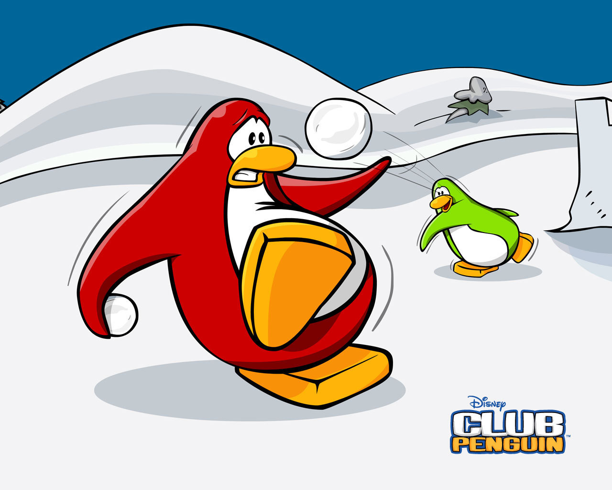
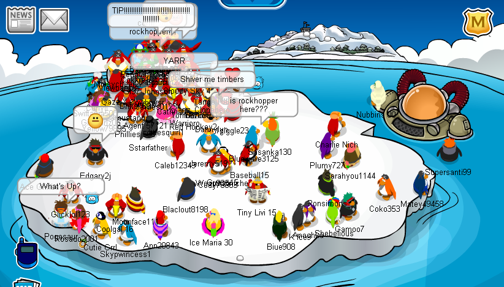
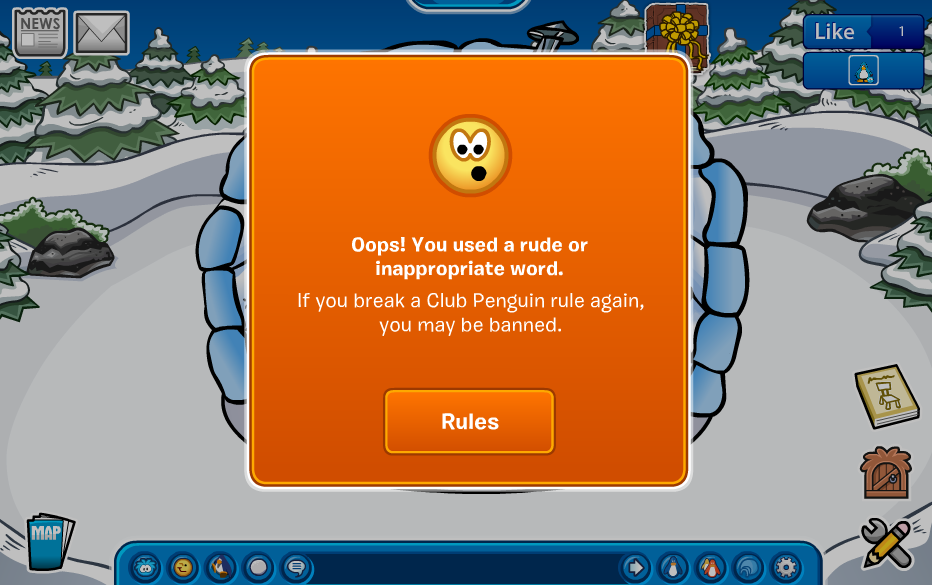
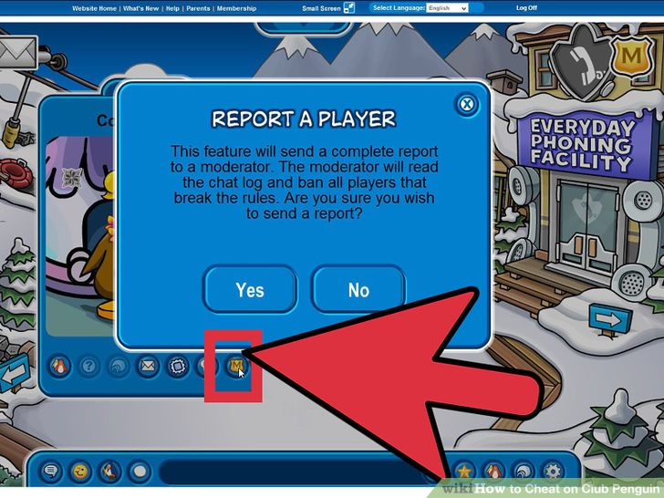

1. Do not throw snowballs at other players' penguin avatars without their consent.

Club Penguin users should be considerate and respectful of the avatars of other Club Penguin users while sharing the same virtual environment as them. Throwing snowballs at other penguins without their consent can be seen as unkind and disrespectful of another player’s avatar and personal space and may negatively influence their experience in the Club Penguin virtual world as well as create conflict. We don’t want to ruin another player’s fun.
2. Don’t stand directly on, or cover up other penguins.

Standing on or too close to other penguins is a breach of spacial awareness. Users will be unable to see what their avatar is doing until they move to a new spot. There is even a possibility that there could be pathing issues that hinder someone if they try to move from their location. Another issue is an inability to distinguish someone else’s virtual presence (even after customization of their appearance/loadout), as both their avatar (and in the case of Club Penguin, their text chat) will be obscured.
3. Refrain from using obscene or hurtful language in chat.

Whenever inappropriate language is used in Club Penguin, the chat is filtered, and the user is greeted with a pop-up as feedback reminding them of the rules. Even though the game has software limitations set in place to prevent it from appearing, such language can hurt the emotions of other users, make them uncomfortable, and ultimately make the game less fun for them. And even though we are college students, remember that Club Penguin aims to provide a safe environment for children, even providing an option to limit chat to predefined phrases.
4. Choose appropriate clothing for your penguin.

The Club Penguin community values maintaining an environment where users of any background can log in and participate in a cohesive, safe environment. Therefore, a warning will be given for wearing clothing that could be inappropriate or insulting to others. The same goes with a user sharing personal information or saying something inappropriate in the chat, since it is necessary that people cater to the userbase, which in this case is rather diverse (and a fair amount of the userbase is made up of a younger audience).